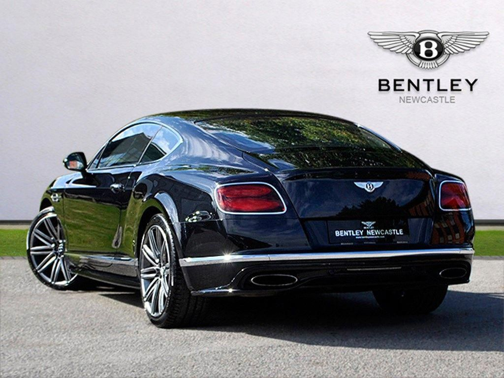

Bentley Continetal Gt
Diseño

Velocidad y comodidad
El Continental GT presenta líneas aerodinámicas limpias y superformadas. La carrocería ancha y baja, que evoca una sensación de velocidad y presencia. Para complementar el llamativo diseño interior del automóvil, la iluminación ambiental interior (de serie) se puede configurar según sus preferencias. Con tiras de iluminación creadas para acentuar las líneas de diseño clave del automóvil, puede elegir configuraciones vibrantes o apagadas en siete colores, así como retroiluminar las placas de los escalones en el color elegido.
Tecnología

Nuevas tecnologías
El Continental GT presenta innovaciones en todo el tren motriz, lo que lo convierte en el modelo Bentley más avanzado jamás construido.
La transmisión de doble embrague proporciona cambios de marcha impresionantemente rápidos y una suave aceleración para mejorar el carácter enérgico del automóvil. El sistema de control activo de balanceo de 48 V detecta las condiciones de la carretera y cambia el movimiento del automóvil instantáneamente para optimizar el manejo y garantizar una conducción suave. Y la dirección eléctrica mejora la respuesta al conductor para que siempre se sienta bien para las condiciones de conducción.
Interior

Opciones de inetrior
El Continental GT se puede poner en servicio con impresionantes revestimientos dobles, en los que la veta natural de la madera contrasta con un Grand Black limpio y minimalista, los dos acabados separados por Chrome Pinstripe, una tira de 3 mm de cromo pulido que traza un anillo alrededor de la cabina. Alternativamente, hay una selección de nueve carillas individuales, incluida la nueva fibra de carbono de alto brillo. Cualquiera de estos puede mejorarse con el mismo Chrome Pinstripe utilizado en las carillas dobles (excepto fibra de carbono).